What I keep returning to, and the books that shape how I think about it.
Focus
Placeholder for the field you care about. Write two or three paragraphs here in your own voice — what the problem is, why it matters to you, and the specific corner of it you want to work on.
A second paragraph can narrow from the big picture to the concrete question you keep circling back to.
Bookshelf
각주: 표지·책등은 실제 소장 도서 기준이며, 목록은 계속 업데이트됩니다.
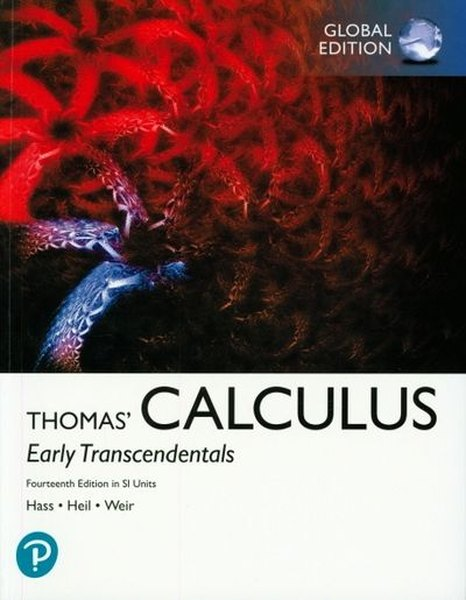
MathCalculus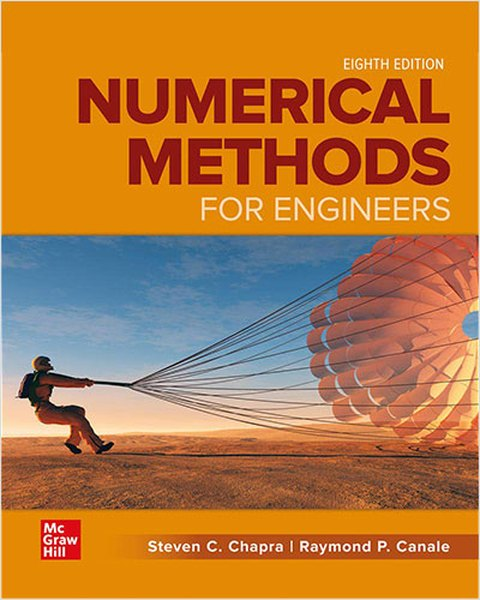
MENumerical Methods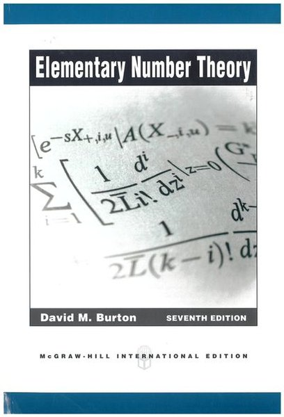
MathNumber Theory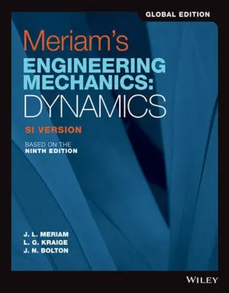
MEDynamics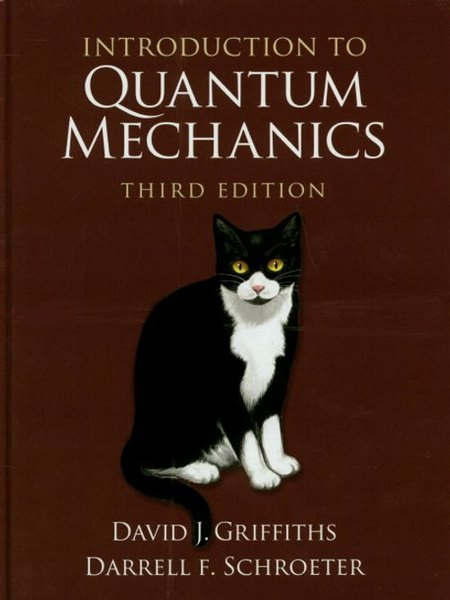
PhysQuantum Mechanics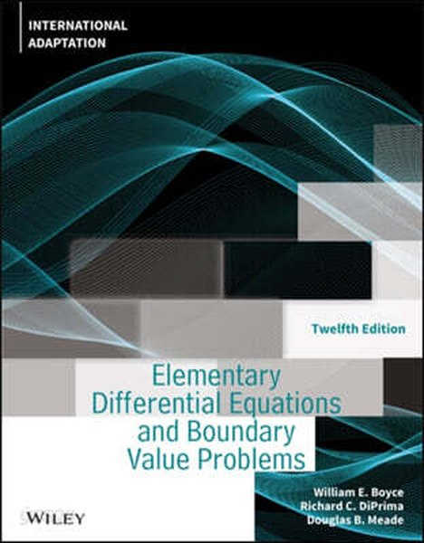
MathDifferential Equations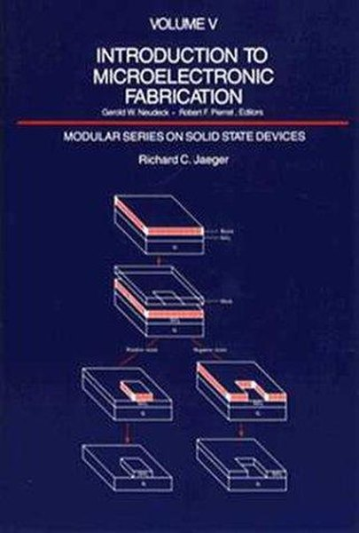
MEMicrofabrication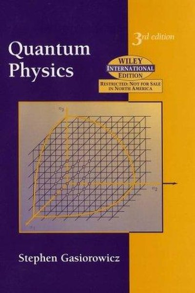
PhysQuantum Physics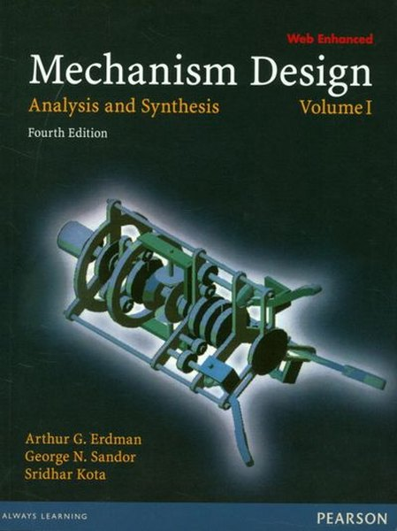
MEMechanism Design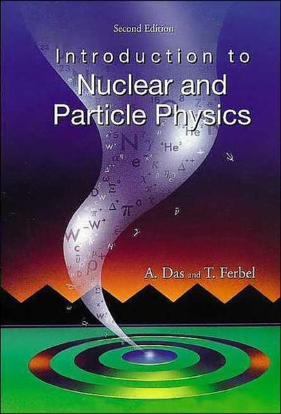
PhysNuclear & Particle Physics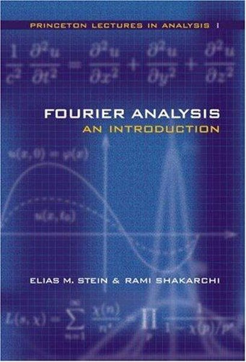
MathFourier Analysis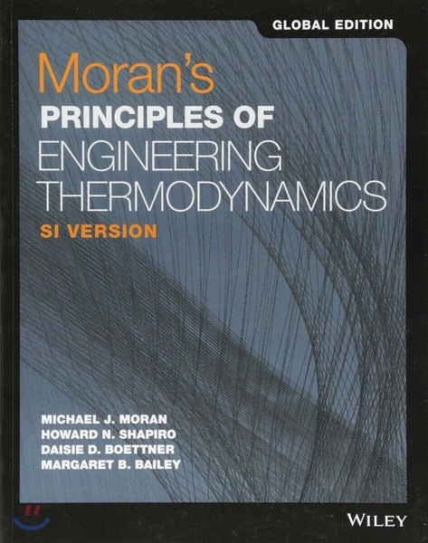
METhermodynamics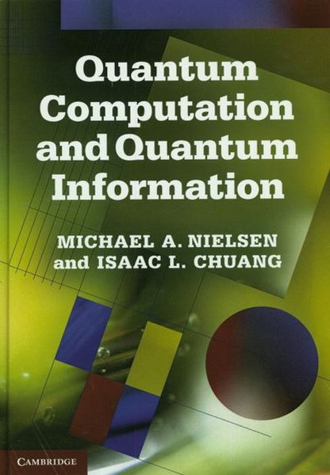
PhysQuantum Information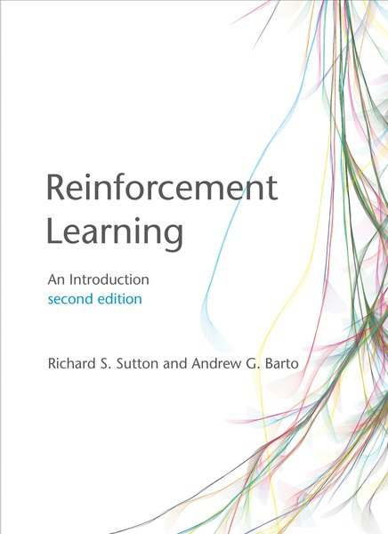
AIReinforcement Learning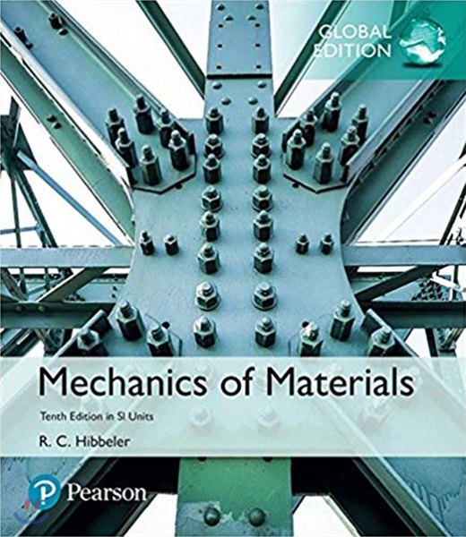
MEMechanics of Materials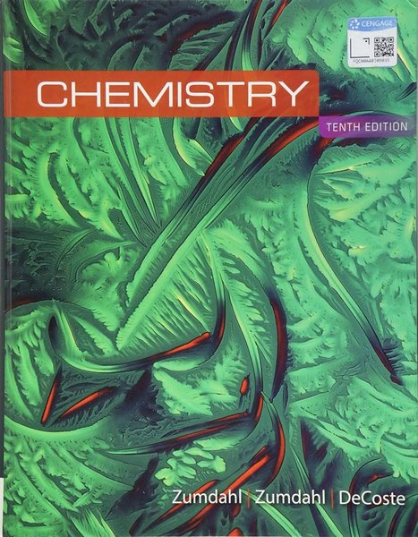
ScienceChemistry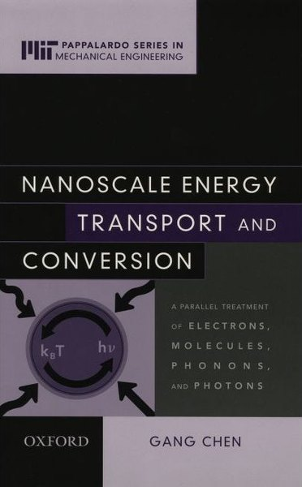
MENanoscale Energy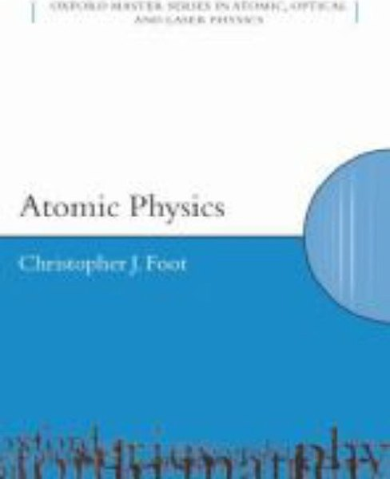
PhysAtomic Physics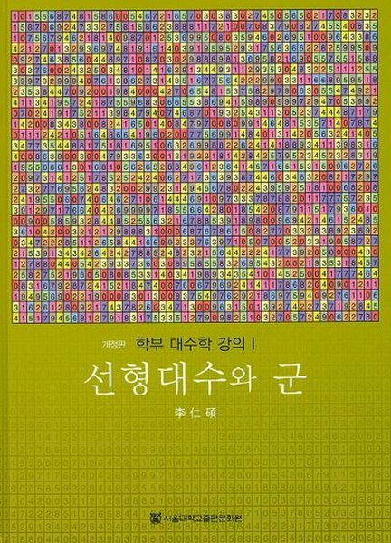
MathLinear Algebra & Group Theory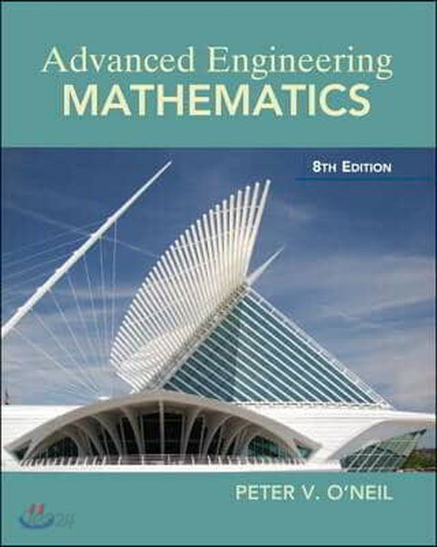
MEEngineering Mathematics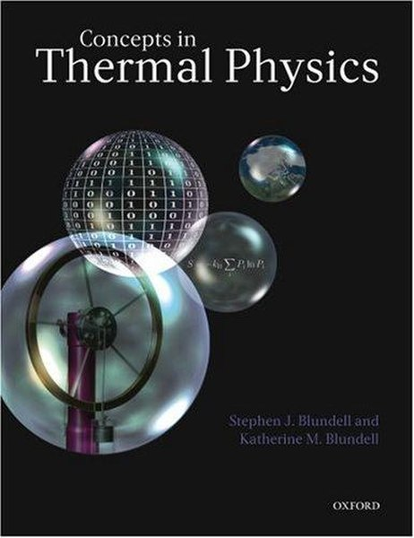
PhysThermal Physics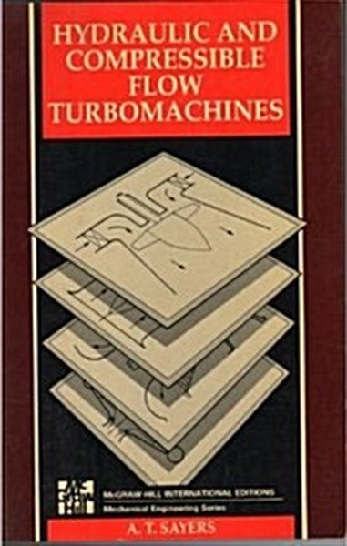
METurbomachinery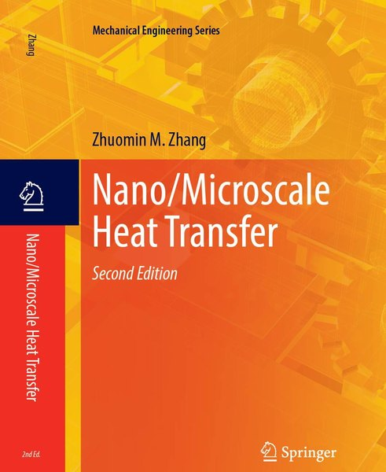
MEMicro/Nanoscale Heat Transfer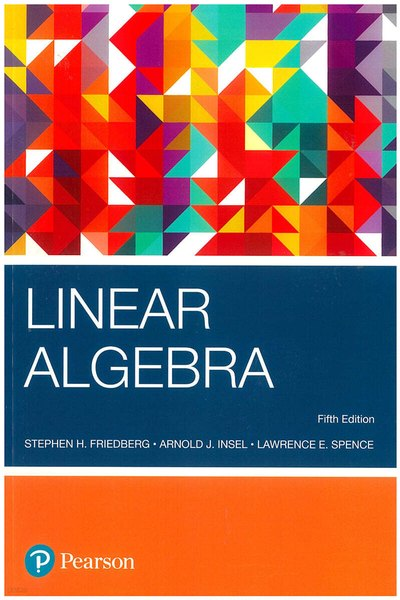
MathLinear Algebra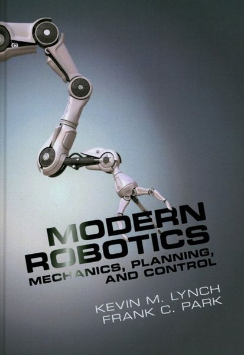
MERobotics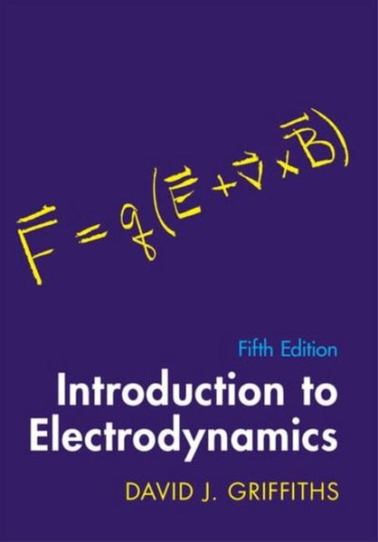
PhysElectrodynamics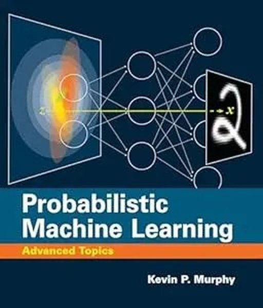
AIMachine Learning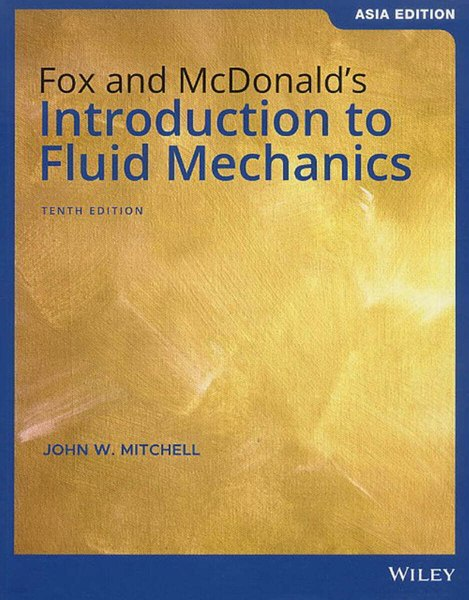
MEFluid Mechanics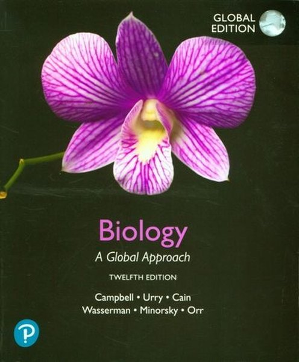
ScienceBiology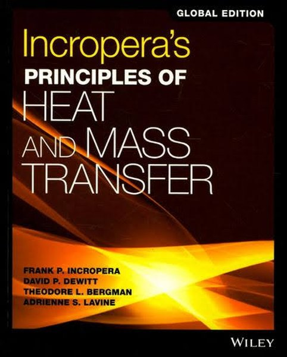
MEHeat Transfer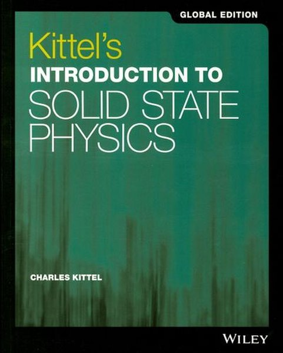
PhysSolid State Physics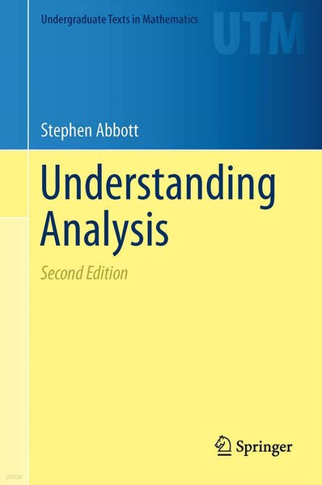
MathReal Analysis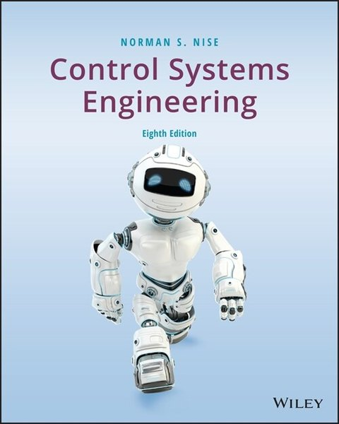
MEControl Engineering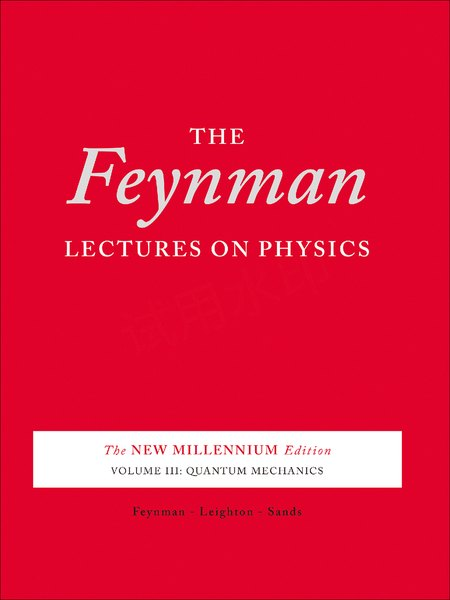
PhysGeneral Physics